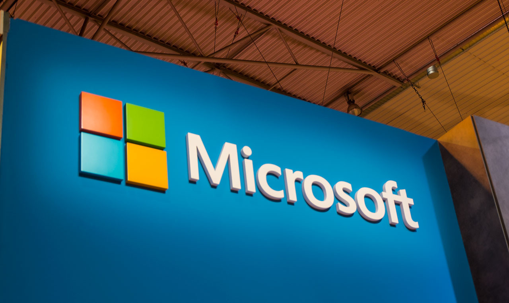
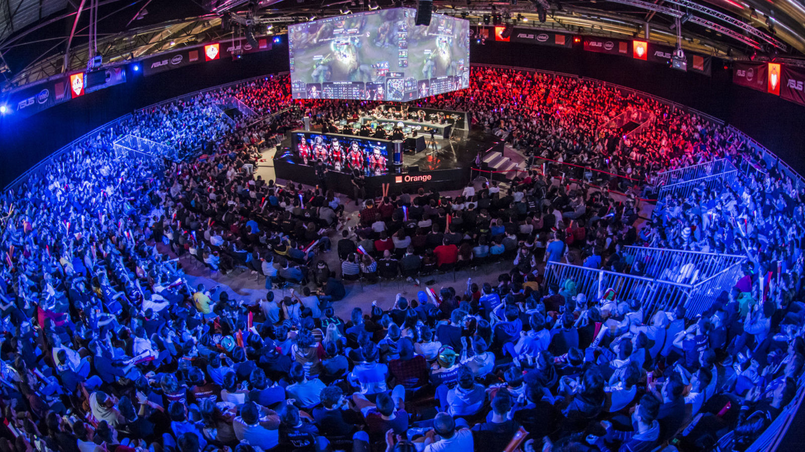

Qué ha pasado para que Microsoft vuelva a valer más que Google en bolsa pasados 3 años
753.000 millones de dólares. Esa es la actual valoración de mercado de Microsoft. Una cifra astronómica y mareante que es importante no solo por ese número como tal, sino por el hecho de que es la primera vez en tres años que Microsoft supera a Google en este ámbito.
Qué ha pasado para que Microsoft vuelva a valer más que Google en bolsa pasados 3 años
753.000 millones de dólares. Esa es la actual valoración de mercado de Microsoft. Una cifra astronómica y mareante que es importante no solo por ese número como tal, sino por el hecho de que es la primera vez en tres años que Microsoft supera a Google en este ámbito.
Ese logro probablemente temporal convierte a la empresa liderada por Satya Nadella en la tercera más importante del mundo en valoración de mercado por detrás de Apple y Amazon. Las cosas van bien en Redmond, y esa nueva Microsoft en la que Windows ya no es tan importante no para de crecer en ingresos.
Diversificar le funciona a Microsoft
Puede que la clave de ese éxito esté en la diversificación de sus negocios, que han pasado a cubrir un rango de soluciones y modelos de negocio mucho más amplio. De la tradicional dependencia de Windows u Office hemos pasado a una situación en la que sus servicios en la nube, sus avances en inteligencia artificial y su entrada en algunos mercados "experimentales" están dándole a Nadella muy buenos resultados.
Microsoft
Es el caso de la computación cuántica, la inteligencia artificial o la realidad mixta, campos que son una clara apuesta de futuro por parte de una Microsoft que a pesar de haber perdido la crucial batalla en el segmento móvil ha logrado paliar el problema.
La reorganización que Microsoft anunció en marzo de 2018 no es más que un paso más en una estrategia singular: los usuarios finales siguen siendo importantes, pero hoy más que nunca son los servicios a empresas los que centran la atención de Microsoft.
La nube y Office 365 como motores de la nueva Microsoft
Eso ha quedado claro con la evolución de Azure, cuya presencia como plataforma Cloud ha crecido de forma asombrosa. Sigue detrás de Amazon Web Services, pero como indicaban en MotifWorks, ha sabido recuperar el terreno perdido gracias a sus buenas relaciones con todo tipo de empresas. Los ingresos por Azure, atención, han crecido un 93% en el primer trimestre de 2018, prácticamente doblando los del mismo periodo del año anterior.
Azure1
El éxito de plataformas como Office 365 —la división que más rápido ha crecido en Microsoft en toda su historia— también ha sido detonante de este crecimiento. La empresa ya tiene más de 135 millones de usuarios activos empresariales de esa suite, además de otros 30,6 millones de usuarios finales activos.
Esos resultados se han venido aderezando con adquisiciones como la de LinkedIn, que le salió muy cara (26.200 millones de dólares) pero que empieza a dar sus frutos y ha generado 1.300 millones de dólares de ingresos, un 37% más que el mismo periodo de 2017.
Ms Goog
De hecho en los últimos resultados financieros se comprobó cómo efectivamente la nube y esos servicios ofimáticos en la nube están dándole muchas alegrías a Microsoft. Los ingresos crecieron un 16% respecto al primer trimestre de 2017, y los ingresos netos crecieron un 35%, algo asombroso para una empresa de la magnitud de Microsoft.
Eso no quita para que otras divisiones sigan sumando, aunque sea en menor medida. La que engloba a soluciones Surface creció un 32%, y su división de entretenimiento con la Xbox One como absoluta protagonista creció un 24%, con 59 millones de usuarios activos de Xbox Live en ese primer trimestre de 2018.
¿Adivináis cuál fue el peor de todos estos resultados? Efectivamente: el de la división relacionada con Windows, que tan solo creció un 4%, una cifra que se salva gracias al crecimiento del 11% en licencias de Windows 10 Pro para usuarios empresariales. Las licencias no-pro bajaron un 8%, algo que la empresa atribuye a la llegada de soluciones de gama de entrada o a esa batalla cada vez más interesante con los Chromebook que triunfan en Estados Unidos.
A la caza del "trillón" de dólares
A día de hoy ambas están lejos de una Apple que con sus 923.000 millones de dólares se acerca a esa barrera psicológica del 'trillion' (en la notación corta usada en Estados Unidos entre otros) de dólares de valoración bursátil. Amazon, eso sí, está bastante más cerca, ya que su valoración actual se sitúa en los 782.000 millones de dólares.

Cifras de récord para el arranque más visto de la Superliga Orange
Sabíamos que el hype por el retorno de la Superliga Orange era real, pero no tanto.
La esperada vuelta de la competición nacional más importante de League of Legends volvió a ponerse en marcha el pasado 26 de mayo, y lo hizo rompiendo récords de audiencia.
Fueron más de 112.000 los espectadores que siguieron en directo la vuelta al terreno de juego de los chicos de Mad Lions, KIYF y compañía. Cifras dignas de la competición internacional que sobrepasan lo logrado por la anterior jornada inaugural en Tenerife celebrada en enero.
Cifras de récord para el arranque más visto de la Superliga Orange
Sabíamos que el hype por el retorno de la Superliga Orange era real, pero no tanto.
La esperada vuelta de la competición nacional más importante de League of Legends volvió a ponerse en marcha el pasado 26 de mayo, y lo hizo rompiendo récords de audiencia.
Fueron más de 112.000 los espectadores que siguieron en directo la vuelta al terreno de juego de los chicos de Mad Lions, KIYF y compañía. Cifras dignas de la competición internacional que sobrepasan lo logrado por la anterior jornada inaugural en Tenerife celebrada en enero.
El pistoletazo de salida de esta temporada se hace así con el honor de ser el comienzo más visto de la historia de la Superliga Orange.
Los cuatro partidos que tuvieron lugar durante este primer lance entre los mejores equipos del panorama nacional no solo acapararon la atención del público virtual. El Auditorio de MEDIAPRO en Barcelona también recibió a los fans de la ciudad condal en sus estudios para presenciar el evento de manera presencial y gratuita. Los más de 600 asistentes que pasaron por allí pudieron además conocer a sus ídolos en persona a través del fan meeting que cada equipo organizó tras cumplir en la cancha.
Una jornada marcada por el empate
Es probable que la mayoría de esos espectadores esperase un triunfo arrollador de Mad Lions E.C.
No en vano, los leones se alzaron vencedores de la pasada edición de la Superliga Orange. El prometedor conjunto madrileño partía con la ventaja de conocer bien a su rival, pero también con el peso del favorito.
Quizás sea por eso que los de Araneae no fueron capaces de agarrar su primera victoria en este split de verano, teniendo que conformarse con el empate ante Movistar Riders.
Los jinetes azules se mostraron notablemente superiores al vigente campeón de la liga, mostrando su clara dominancia desde el minuto 1 del primer encuentro. Mad Lions no terminaba de encontrarse y veía impotente cómo Gustav “Xyraz” Blomkvist, MVP indiscutible de la jornada, se marcaba el primer quadrakill de la temporada con Singed.
Con todo, los leones se las apañaron para poner las tablas en el marcador, más por descuido de Riders que por méritos propios.
Por otro lado, el encuentro que enfrentaba a KIYF con los recién llegados Dragons E.C. no dio lugar a sorpresas. Los ninjas arrasaron a los nuevos de la clase sin compasión para echarse los 3 puntos a la saca, colocándose así líderes en la clasificación tras un primer riña protagonizada por el empate.
Lo que nos espera en el horizonte
Este año, recordemos, la final de la Superliga Orange será diferente. A diferencia de las anteriores ediciones, la actual temporada no tendrá en Gamergy su último tramo en el camino y escenario para las finales.
La liga hará una visita obligada a la feria eSports más importante del país el 24 de junio, pero su parada en los pabellones de IFEMA en Madrid no será definitiva; la competición seguirá adelante.
El broche de oro lo pondrá un nuevo evento dedicado en exclusiva a la celebración de la finalísima. Y será en el Bilbao Arena, hogar del carismático Ibai Llanos, ante la mirada atenta de los 3.000 espectadores que llenarán las gradas del estadio.
Pero todo esto lo dejamos para más adelante. Lo que importa ahora es ver cómo se las gastan Mad Lions y los demás favoritos para recuperar su condición favoritos. Lo sabremos el miércoles y jueves 30 y 31 de mayo respectivamente, fechas elegidas para oficiar la segunda jornada de la competición.
El caso contra los globos de helio: un problema medioambiental disfrazado de luz y color que Europa quiere atajar
Hay pocas cosas más bonitas que un puñado de cientos de globos llenos de helio ascendiendo hacia el cielo. Pequeñas esferas de gas más ligero que el aire almacenadas dentro de un material flexible de colores brillantes. Pero la Unión Europea está en contra de todo lo bello del mundo.
No en vano, la guerra contra el plástico desechable ha iniciado la Comisión Europea tiene como uno de sus objetivos los globos. Razones no le faltan: en realidad, si nos atenemos a su impacto ambiental, lo inexplicable es que los globos no lleven años prohibidos.
El caso contra los globos de helio: un problema medioambiental disfrazado de luz y color que Europa quiere atajar
Hay pocas cosas más bonitas que un puñado de cientos de globos llenos de helio ascendiendo hacia el cielo. Pequeñas esferas de gas más ligero que el aire almacenadas dentro de un material flexible de colores brillantes. Pero la Unión Europea está en contra de todo lo bello del mundo.
No en vano, la guerra contra el plástico desechable ha iniciado la Comisión Europea tiene como uno de sus objetivos los globos. Razones no le faltan: en realidad, si nos atenemos a su impacto ambiental, lo inexplicable es que los globos no lleven años prohibidos.
Un enorme desperdicio
Samuel Zeller 358865 Unsplash
El primer argumento contra los globos de helio es también e menos preocupante: el enorme desperdicio de recursos valiosos que conlleva. El helio es un gas relativamente escaso que se usa en todo tipo de procesos científicos y sanitarios. Es cierto que hay alternativas al helio para hacer que los globos se eleven, pero la triste realidad mundial es que esas alternativas son muy minoritarias a nivel global.
Además de eso, hay ciertos tipos de globos que pueden conducir la electricidad, causar problemas en los equipamientos eléctricos y, por eso mismo, muchos lugares los tienen prohibidos. No obstante, a diferencia de con las personas, lo importante de los globos no está en el interior. Lo importante (y lo problemático) está en el exterior.
¿Cuánto tarda un globo en desaparecer?
Nathan Dumlao 507148 Unsplash
Sí, los globos de látex son biodegradables. Es cierto, se fabrican con la savia del árbol del caucho a la que se le añaden algunos productos químicos, pigmentos y, a veces, polímeros sintéticos. Según explican sus fabricantes, un globo de látex dura lo que una hoja de roble: entre 80 - 100 días. Lo que no suelen decir en los debates es que eso es en el mejor de los casos. Si caen al agua: el tiempo estimado de descomposición es de 6 meses. De las cintas y adornos que pueden llevar asociados, ya ni hablamos.
Parece poco porque estamos acostumbrados a materiales plásticos que pueden permanecer generaciones en el medio ambiente sin degradarse lo más mínimo; pero lo cierto es que 6 meses son tanto tiempo que es tristemente habitual que acaben en los estómagos de las más diversas especies animales.
A partir de ahí, todo va a peor porque este tipo de globos no son los únicos (y en muchos lugares, ni siquiera los más populares). El otro gran material de fabricación de globos es la poliamida (también llamado ‘globos metálicos’), un polímero sintético cuyos tiempos de biodegradación son muchísimos más amplios.
Un problema ambiental
Alin Meceanu 573430 Unsplash
Los globos metálicos son más fáciles de inflar, reducen el riesgo de explosión y permanecen flotando mucho más tiempo. Hasta cinco días frente a las 30 horas como máximo de los globos de látex. Eso ha llevado a que, poco a poco, hayan ido ganando cota de mercado agravando un problema ya suficientemente serio.
Sean metálicos o de látex, el problema es el mismo: el 81% de los globos caen de las atmósfera en grandes trozos que sirven de alimento para delfines, ballenas, pájaros marinos y tortugas. Las muertes por obstrucciones intestinales y complicaciones derivadas de los residuos marinos son algo cada vez más común. En especial, entre las tortugas marinas.